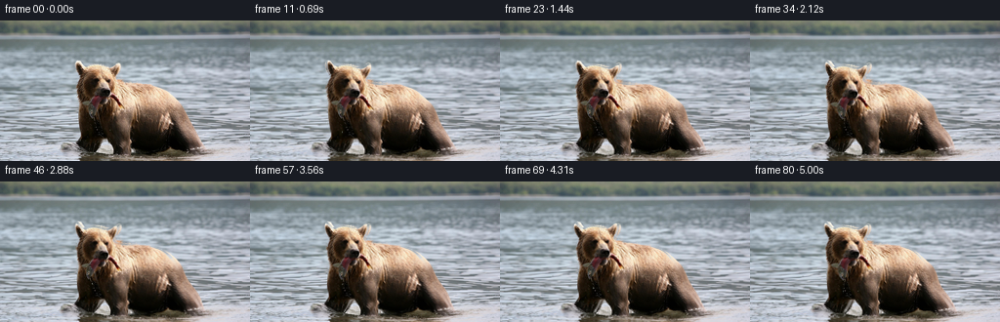
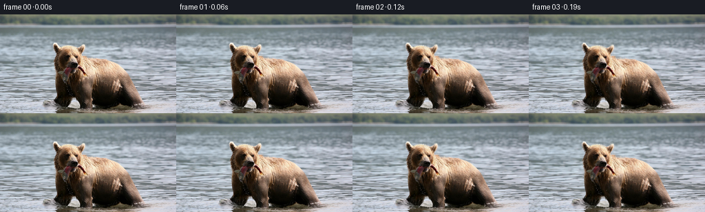
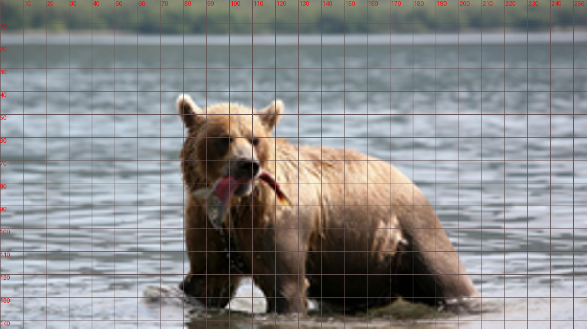
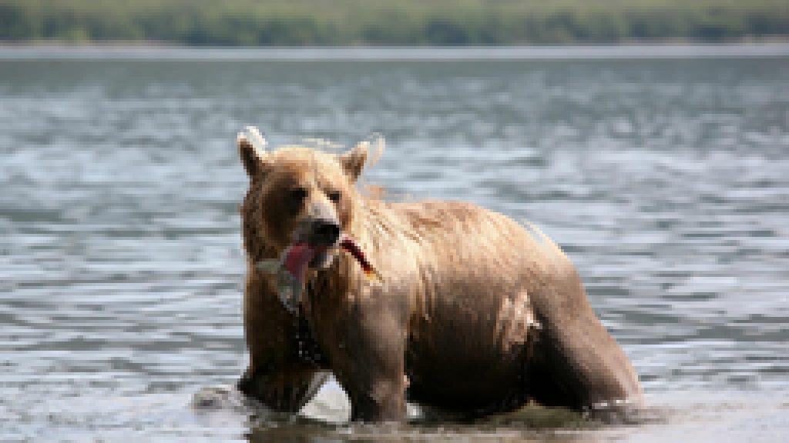
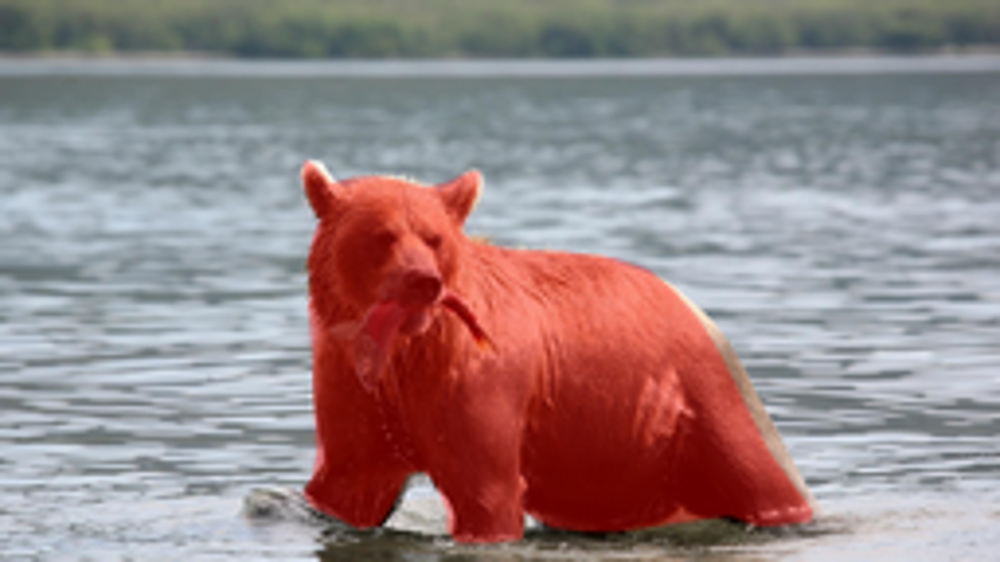

CODING AGENTS AS PIXEL WORLD MODELS
traex/GPT-6.1-Sol · 0872_s4
点击播放 · 原生 RGB 像素
逐轮保存的候选
回放视频、检查图与代码变化。
每份候选均可单独播放。实际图片检查记录在下方工具轨迹中。
候选 01播放与检查图
点击播放 · 原生 RGB 像素


展开代码变化
--- 上一保存版本
+++ 本次保存版本
@@ -0,0 +1,135 @@
+"""A locally generated, image-based animation of a fishing brown bear.
+Only the given RGB photograph is used; all movement is mathematical pixel warping.
+"""
+from pathlib import Path
+import math
+import numpy as np
+from PIL import Image, ImageDraw, ImageFilter
+import cv2
+import artifact_io
+
+ROOT = Path(__file__).resolve().parent
+W,H=256,144
+OUTLINE=[(78,41),(80,42),(84.5,47),(90,45.5),(96,45.2),(102,46),(109,48),
+ (115,46.5),(120.5,43.8),(122.5,44),(122,49),(120,54),(117.8,59),
+ (120.5,62),(132,64),(145,64.5),(157,66),(166,69),(173,75),
+ (179,82),(185,92),(191,104),(197,116),(207.8,130.5),(207.5,133.5),
+ (199,134.5),(193,134.5),(187,132),(178,133.3),(169,134.5),(159,136),
+ (149,136),(141,135),(134,131),(133.5,138),(126,139),(117,139),
+ (114.5,136),(114.5,131),(111,123),(108,120.5),(104,121.5),(101,128),
+ (97,134.5),(92,135.5),(86,132.5),(80,130),(77.5,126.5),(80,122),
+ (81,116),(80.5,106),(80.2,97),(80,91),(79.5,85),(79,79),
+ (79.5,72),(79,66),(80,61),(82,56),(80,53),(78.5,49),(77.5,45)]
+
+def silhouette():
+ p=Image.new('L',(W*4,H*4),0)
+ ImageDraw.Draw(p).polygon([(int(x*4),int(y*4)) for x,y in OUTLINE],fill=255)
+ p=p.resize((W,H),Image.Resampling.LANCZOS).filter(ImageFilter.GaussianBlur(.33))
+ return np.array(p,dtype=np.float32)/255
+
+def smooth(a,b,x):
+ z=np.clip((x-a)/(b-a),0,1)
+ return z*z*(3-2*z)
+
+def displacement(x,y,t):
+ # Stationary shoulders support a small weight transfer, with the paws shifting in water.
+ base_x=-2.7*smooth(0,5,t)+.55*math.sin(t*1.7)
+ base_y=.34*math.sin(t*1.4)
+ dx=np.full_like(x,base_x);dy=np.full_like(y,base_y)
+ # A near-rigid head turn, gently dipping to readjust the fish.
+ head=(1-smooth(78,110,y))*np.exp(-((x-102)/37)**6)
+ theta=.065*math.sin(1.23*t)+.018*math.sin(2.5*t)
+ cx,cy=109.,85.
+ vx,vy=x-cx,y-cy
+ ct,st=math.cos(theta),math.sin(theta)
+ yaw=1-.025*(1-math.cos(t*1.2))
+ hx=ct*vx*yaw-st*vy-vx-2.6*math.sin(1.18*t)
+ hy=st*vx+ct*vy-vy+1.7*(1-math.cos(1.43*t))*.5+.48*math.sin(2.8*t)
+ dx+=head*hx;dy+=head*hy
+ # Shoulder breathing and a slight lean over the forelegs.
+ torso=np.exp(-((x-145)/43)**2-((y-91)/34)**2)
+ dx+=.65*math.sin(1.45*t)*torso
+ dy+=-.55*math.sin(1.45*t)*torso
+ feet=smooth(110,138,y)
+ fore=np.exp(-((x-122)/10)**2)*feet
+ other=np.exp(-((x-90)/11)**2)*feet
+ back=np.exp(-((x-196)/15)**2)*feet
+ dx+=fore*(1.5*math.sin(t*1.55))+other*(-1.35*math.sin(t*1.55))+back*(.65*math.sin(t*1.55))
+ dy+=fore*(-.55*max(0,math.sin(t*1.55)))+other*(-.55*max(0,-math.sin(t*1.55)))
+ # The suspended salmon flexes a little beneath the firm grip at the muzzle.
+ fish=np.exp(-((x-95)/6.3)**4)*smooth(78,90,y)*(1-smooth(98,107,y))
+ a=.105*math.sin(t*4.7)+.045*math.sin(t*2.3)
+ dx+=fish*(-(y-78)*math.sin(a))
+ dy+=fish*((x-101)*math.sin(a)+(y-78)*(math.cos(a)-1))
+ tail=np.exp(-((x-120)/7)**4-((y-85)/6)**4)*smooth(111,124,x)
+ dx+=tail*.65*math.sin(4.7*t)
+ dy+=tail*.8*math.sin(4.7*t)
+ return dx,dy
+
+
+def generate():
+ original=np.array(Image.open(ROOT/'first_frame.png').convert('RGB'))
+ rgb=original.astype(np.float32)
+ alpha=silhouette()
+ # Fill only the area that can be uncovered by the animated silhouette.
+ hole=(alpha>.03).astype(np.uint8)*255
+ filled=cv2.inpaint(original,hole,4,cv2.INPAINT_TELEA).astype(np.float32)
+ # Edge texture is copied inward along the surface normal. Only a narrow rim is
+ # ever uncovered; this avoids importing any unrelated background material.
+ _,inds=__import__('scipy').ndimage.distance_transform_edt(hole>0,return_indices=True)
+ nearest=rgb[inds[0],inds[1]]
+ bg=filled*.6+nearest*.4
+ bg=rgb*(1-alpha[...,None])+bg*alpha[...,None]
+ yy,xx=np.mgrid[0:H,0:W].astype(np.float32)
+ frames=[original]
+ for f in range(1,81):
+ t=f/16
+ # Surface waves advect at perspective-dependent speed, not a camera warp.
+ depth=smooth(20,141,yy)
+ wet=smooth(17,30,yy)
+ wx=(.38+.5*depth)*(np.sin(.17*yy+1.5*t)-np.sin(.17*yy))
+ wx+=.27*depth*(np.sin(.065*xx+.12*yy-.95*t)-np.sin(.065*xx+.12*yy))
+ wy=(.16+.28*depth)*(np.sin(.19*yy+.065*xx-1.85*t)-np.sin(.19*yy+.065*xx))
+ # Shallow ripples propagate away from the contact points.
+ for px,py in [(90,135),(123,138),(197,134)]:
+ r=np.sqrt(((xx-px)/1.55)**2+((yy-py)*3.8)**2)
+ ann=np.exp(-r/19)*smooth(2,8,r)
+ ripple=.18*ann*(np.sin(.78*r-3.6*t)-np.sin(.78*r))
+ wy+=ripple
+ water=cv2.remap(bg,xx+wet*wx,yy+wet*wy,cv2.INTER_CUBIC,borderMode=cv2.BORDER_REFLECT_101)
+ # A travelling highlight, very low contrast, follows the existing water texture.
+ lum=cv2.cvtColor(original,cv2.COLOR_RGB2GRAY).astype(np.float32)
+ detail=lum-cv2.GaussianBlur(lum,(0,0),1.1)
+ gloss=.024*detail*depth*(np.sin(.17*xx+.48*yy-2.3*t)-np.sin(.17*xx+.48*yy))
+ water+=gloss[...,None]
+ # Iteratively invert the smooth puppet deformation to avoid tears or holes.
+ sx=xx.copy();sy=yy.copy()
+ for _ in range(5):
+ dx,dy=displacement(sx,sy,t)
+ sx=xx-dx;sy=yy-dy
+ actor=cv2.remap(rgb,sx,sy,cv2.INTER_CUBIC,borderMode=cv2.BORDER_REFLECT_101)
+ a=cv2.remap(alpha,sx,sy,cv2.INTER_LINEAR,borderMode=cv2.BORDER_CONSTANT)
+ result=water*(1-a[...,None])+actor*a[...,None]
+ # Translucent drops leave the wet fish and run down into the lake.
+ for j,start in enumerate([.25,.78,1.42,2.08,2.66,3.31,3.98,4.61]):
+ age=t-start
+ if 0<age<.68:
+ dx,dy=displacement(np.array([96.],np.float32),np.array([99.],np.float32),start)
+ px=96+float(dx[0])+.55*math.sin(j*2.7)+age*.8
+ py=99+float(dy[0])+9*age+60*age*age
+ amt=.48*smooth(0,.1,age)*(1-smooth(.56,.68,age))
+ dot=np.exp(-((xx-px)/.40)**2-((yy-py)/(.65+age*.7))**2)*amt
+ color=np.array([172,186,178],np.float32)
+ result=result*(1-dot[...,None])+color*dot[...,None]
+ # Retain the exact starting photograph and smoothly introduce new edge pixels.
+ blend=smooth(0,.22,t)
+ result=rgb*(1-blend)+result*blend
+ frames.append(np.clip(np.rint(result),0,255).astype(np.uint8))
+ frames=np.stack(frames)
+ artifact_io.save(frames,ROOT)
+ # Small local previews allow visual and temporal verification.
+ Image.fromarray(frames[40]).resize((1024,576),Image.Resampling.NEAREST).save(ROOT/'.tmp/midpoint.png')
+ return frames
+
+if __name__=='__main__':
+ generate()
候选 02播放与检查图
点击播放 · 原生 RGB 像素
展开代码变化
--- 上一保存版本
+++ 本次保存版本
@@ -6,14 +6,15 @@
import numpy as np
from PIL import Image, ImageDraw, ImageFilter
import cv2
+from scipy.ndimage import distance_transform_edt
import artifact_io
ROOT = Path(__file__).resolve().parent
W,H=256,144
OUTLINE=[(78,41),(80,42),(84.5,47),(90,45.5),(96,45.2),(102,46),(109,48),
(115,46.5),(120.5,43.8),(122.5,44),(122,49),(120,54),(117.8,59),
- (120.5,62),(132,64),(145,64.5),(157,66),(166,69),(173,75),
- (179,82),(185,92),(191,104),(197,116),(207.8,130.5),(207.5,133.5),
+ (120.5,61.5),(132,63.5),(145,64),(157,65),(166,68),(174,74),
+ (182,82),(188,92),(194,104),(200,116),(208.8,130.5),(208,133.5),
(199,134.5),(193,134.5),(187,132),(178,133.3),(169,134.5),(159,136),
(149,136),(141,135),(134,131),(133.5,138),(126,139),(117,139),
(114.5,136),(114.5,131),(111,123),(108,120.5),(104,121.5),(101,128),
@@ -76,7 +77,7 @@
filled=cv2.inpaint(original,hole,4,cv2.INPAINT_TELEA).astype(np.float32)
# Edge texture is copied inward along the surface normal. Only a narrow rim is
# ever uncovered; this avoids importing any unrelated background material.
- _,inds=__import__('scipy').ndimage.distance_transform_edt(hole>0,return_indices=True)
+ _,inds=distance_transform_edt(hole>0,return_indices=True)
nearest=rgb[inds[0],inds[1]]
bg=filled*.6+nearest*.4
bg=rgb*(1-alpha[...,None])+bg*alpha[...,None]
候选 03播放与检查图
可观测工具轨迹
实际执行的命令与返回图片。
命令 1exit 0
/bin/bash -lc "ls -la && cat prompt.txt && printf '\\n---RULES---\\n' && cat GENERATION_RULES.md"
命令 2exit 0
/bin/bash -lc "cat task_spec.json && cat artifact_io.py && python - <<'PY'
from PIL import Image
im=Image.open('first_frame.png');print(im.size)
im.resize((1024,576)).save('.tmp/enlarged.png')
PY"命令 3exit 0
/bin/bash -lc "python - <<'PY' import importlib.util for x in ['numpy','PIL','scipy','cv2','imageio']: print(x,bool(importlib.util.find_spec(x))) PY"
命令 4exit 0
/bin/bash -lc "python - <<'PY'
from PIL import Image,ImageDraw
im=Image.open('first_frame.png').resize((1024,576))
d=ImageDraw.Draw(im)
for x in range(0,256,10):
d.line([(x*4,0),(x*4,576)],fill=(100,80,80),width=1);d.text((x*4+2,0),str(x),fill='red')
for y in range(10,144,10):
d.line([(0,y*4),(1024,y*4)],fill=(100,80,80),width=1);d.text((0,y*4),str(y),fill='red')
im.save('.tmp/grid.png')
PY"命令 5exit 0
/bin/bash -lc "python - <<'PY'
from PIL import Image
im=Image.open('first_frame.png');im.crop((70,35,215,144)).resize((870,654)).save('.tmp/bear.png')
PY"命令 6exit 0
/bin/bash -lc "cat > generate.py <<'PY'
\"\"\"A locally generated, image-based animation of a fishing brown bear.
Only the given RGB photograph is used; all movement is mathematical pixel warping.
\"\"\"
from pathlib import Path
import math
import numpy as np
from PIL import Image, ImageDraw, ImageFilter
import cv2
import artifact_io
ROOT = Path(__file__).resolve().parent
W,H=256,144
OUTLINE=[(78,41),(80,42),(84.5,47),(90,45.5),(96,45.2),(102,46),(109,48),
(115,46.5),(120.5,43.8),(122.5,44),(122,49),(120,54),(117.8,59),
(120.5,62),(132,64),(145,64.5),(157,66),(166,69),(173,75),
(179,82),(185,92),(191,104),(197,116),(207.8,130.5),(207.5,133.5),
(199,134.5),(193,134.5),(187,132),(178,133.3),(169,134.5),(159,136),
(149,136),(141,135),(134,131),(133.5,138),(126,139),(117,139),
(114.5,136),(114.5,131),(111,123),(108,120.5),(104,121.5),(101,128),
(97,134.5),(92,135.5),(86,132.5),(80,130),(77.5,126.5),(80,122),
(81,116),(80.5,106),(80.2,97),(80,91),(79.5,85),(79,79),
(79.5,72),(79,66),(80,61),(82,56),(80,53),(78.5,49),(77.5,45)]
def silhouette():
p=Image.new('L',(W*4,H*4),0)
ImageDraw.Draw(p).polygon([(int(x*4),int(y*4)) for x,y in OUTLINE],fill=255)
p=p.resize((W,H),Image.Resampling.LANCZOS).filter(ImageFilter.GaussianBlur(.33))
return np.array(p,dtype=np.float32)/255
def smooth(a,b,x):
z=np.clip((x-a)/(b-a),0,1)
return z*z*(3-2*z)
def displacement(x,y,t):
# Stationary shoulders support a small weight transfer, with the paws shifting in water.
base_x=-2.7*smooth(0,5,t)+.55*math.sin(t*1.7)
base_y=.34*math.sin(t*1.4)
dx=np.full_like(x,base_x);dy=np.full_like(y,base_y)
# A near-rigid head turn, gently dipping to readjust the fish.
head=(1-smooth(78,110,y))*np.exp(-((x-102)/37)**6)
theta=.065*math.sin(1.23*t)+.018*math.sin(2.5*t)
cx,cy=109.,85.
vx,vy=x-cx,y-cy
ct,st=math.cos(theta),math.sin(theta)
yaw=1-.025*(1-math.cos(t*1.2))
hx=ct*vx*yaw-st*vy-vx-2.6*math.sin(1.18*t)
hy=st*vx+ct*vy-vy+1.7*(1-math.cos(1.43*t))*.5+.48*math.sin(2.8*t)
dx+=head*hx;dy+=head*hy
# Shoulder breathing and a slight lean over the forelegs.
torso=np.exp(-((x-145)/43)**2-((y-91)/34)**2)
dx+=.65*math.sin(1.45*t)*torso
dy+=-.55*math.sin(1.45*t)*torso
feet=smooth(110,138,y)
fore=np.exp(-((x-122)/10)**2)*feet
other=np.exp(-((x-90)/11)**2)*feet
back=np.exp(-((x-196)/15)**2)*feet
dx+=fore*(1.5*math.sin(t*1.55))+other*(-1.35*math.sin(t*1.55))+back*(.65*math.sin(t*1.55))
dy+=fore*(-.55*max(0,math.sin(t*1.55)))+other*(-.55*max(0,-math.sin(t*1.55)))
# The suspended salmon flexes a little beneath the firm grip at the muzzle.
fish=np.exp(-((x-95)/6.3)**4)*smooth(78,90,y)*(1-smooth(98,107,y))
a=.105*math.sin(t*4.7)+.045*math.sin(t*2.3)
dx+=fish*(-(y-78)*math.sin(a))
dy+=fish*((x-101)*math.sin(a)+(y-78)*(math.cos(a)-1))
tail=np.exp(-((x-120)/7)**4-((y-85)/6)**4)*smooth(111,124,x)
dx+=tail*.65*math.sin(4.7*t)
dy+=tail*.8*math.sin(4.7*t)
return dx,dy
def generate():
original=np.array(Image.open(ROOT/'first_frame.png').convert('RGB'))
rgb=original.astype(np.float32)
alpha=silhouette()
# Fill only the area that can be uncovered by the animated silhouette.
hole=(alpha>.03).astype(np.uint8)*255
filled=cv2.inpaint(original,hole,4,cv2.INPAINT_TELEA).astype(np.float32)
# Edge texture is copied inward along the surface normal. Only a narrow rim is
# ever uncovered; this avoids importing any unrelated background material.
_,inds=__import__('scipy').ndimage.distance_transform_edt(hole>0,return_indices=True)
nearest=rgb[inds[0],inds[1]]
bg=filled*.6+nearest*.4
bg=rgb*(1-alpha[...,None])+bg*alpha[...,None]
yy,xx=np.mgrid[0:H,0:W].astype(np.float32)
frames=[original]
for f in range(1,81):
t=f/16
# Surface waves advect at perspective-dependent speed, not a camera warp.
depth=smooth(20,141,yy)
wet=smooth(17,30,yy)
wx=(.38+.5*depth)*(np.sin(.17*yy+1.5*t)-np.sin(.17*yy))
wx+=.27*depth*(np.sin(.065*xx+.12*yy-.95*t)-np.sin(.065*xx+.12*yy))
wy=(.16+.28*depth)*(np.sin(.19*yy+.065*xx-1.85*t)-np.sin(.19*yy+.065*xx))
# Shallow ripples propagate away from the contact points.
for px,py in [(90,135),(123,138),(197,134)]:
r=np.sqrt(((xx-px)/1.55)**2+((yy-py)*3.8)**2)
ann=np.exp(-r/19)*smooth(2,8,r)
ripple=.18*ann*(np.sin(.78*r-3.6*t)-np.sin(.78*r))
wy+=ripple
water=cv2.remap(bg,xx+wet*wx,yy+wet*wy,cv2.INTER_CUBIC,borderMode=cv2.BORDER_REFLECT_101)
# A travelling highlight, very low contrast, follows the existing water texture.
lum=cv2.cvtColor(original,cv2.COLOR_RGB2GRAY).astype(np.float32)
detail=lum-cv2.GaussianBlur(lum,(0,0),1.1)
gloss=.024*detail*depth*(np.sin(.17*xx+.48*yy-2.3*t)-np.sin(.17*xx+.48*yy))
water+=gloss[...,None]
# Iteratively invert the smooth puppet deformation to avoid tears or holes.
sx=xx.copy();sy=yy.copy()
for _ in range(5):
dx,dy=displacement(sx,sy,t)
sx=xx-dx;sy=yy-dy
actor=cv2.remap(rgb,sx,sy,cv2.INTER_CUBIC,borderMode=cv2.BORDER_REFLECT_101)
a=cv2.remap(alpha,sx,sy,cv2.INTER_LINEAR,borderMode=cv2.BORDER_CONSTANT)
result=water*(1-a[...,None])+actor*a[...,None]
# Translucent drops leave the wet fish and run down into the lake.
for j,start in enumerate([.25,.78,1.42,2.08,2.66,3.31,3.98,4.61]):
age=t-start
if 0<age<.68:
dx,dy=displacement(np.array([96.],np.float32),np.array([99.],np.float32),start)
px=96+float(dx[0])+.55*math.sin(j*2.7)+age*.8
py=99+float(dy[0])+9*age+60*age*age
amt=.48*smooth(0,.1,age)*(1-smooth(.56,.68,age))
dot=np.exp(-((xx-px)/.40)**2-((yy-py)/(.65+age*.7))**2)*amt
color=np.array([172,186,178],np.float32)
result=result*(1-dot[...,None])+color*dot[...,None]
# Retain the exact starting photograph and smoothly introduce new edge pixels.
blend=smooth(0,.22,t)
result=rgb*(1-blend)+result*blend
frames.append(np.clip(np.rint(result),0,255).astype(np.uint8))
frames=np.stack(frames)
artifact_io.save(frames,ROOT)
# Small local previews allow visual and temporal verification.
Image.fromarray(frames[40]).resize((1024,576),Image.Resampling.NEAREST).save(ROOT/'.tmp/midpoint.png')
return frames
if __name__=='__main__':
generate()
PY
python generate.py"命令 7exit 0
/bin/bash -lc "python - <<'PY'
import generate
import numpy as np
from PIL import Image
im=np.array(Image.open('first_frame.png')).astype(float);a=generate.silhouette()
im[:,:,0]=im[:,:,0]*(1-a*.4)+255*a*.4;im[:,:,1:]*=(1-a[:,:,None]*.4)
Image.fromarray(im.astype('uint8')).resize((1024,576)).save('.tmp/mask.png')
PY"命令 8exit 0
/bin/bash -lc "python - <<'PY'
p='generate.py'
s=open(p).read().replace('(120.5,62),(132,64),(145,64.5),(157,66),(166,69),(173,75),\\n (179,82),(185,92),(191,104),(197,116),(207.8,130.5),(207.5,133.5),','(120.5,61.5),(132,63.5),(145,64),(157,65),(166,68),(174,74),\\n (182,82),(188,92),(194,104),(200,116),(208.8,130.5),(208,133.5),')
s=s.replace('import cv2\\n','import cv2\\nfrom scipy.ndimage import distance_transform_edt\\n').replace(\"__import__('scipy').ndimage.distance_transform_edt\",'distance_transform_edt')
open(p,'w').write(s)
PY
python generate.py
python - <<'PY'
import numpy as np
from PIL import Image
from pathlib import Path
f=np.stack([np.asarray(Image.open(p)) for p in sorted(Path('frames').glob('*.png'))])
print('Shape:',f.shape,'dtype:',f.dtype)
print('First frame exact:',np.array_equal(f[0],np.asarray(Image.open('first_frame.png'))))
print('Adjacent RGB MAD:',np.abs(np.diff(f.astype(float),axis=0)).mean())
# export a convenient playable video as well as the requested RGB artifacts
import cv2
writer=cv2.VideoWriter('video.mp4',cv2.VideoWriter_fourcc(*'mp4v'),16,(256,144))
for frame in f:writer.write(cv2.cvtColor(frame,cv2.COLOR_RGB2BGR))
writer.release()
PY"视觉工具实际返回图片 1

视觉工具实际返回图片 2

视觉工具实际返回图片 3

视觉工具实际返回图片 4

视觉工具实际返回图片 5

保存候选 3 份；完成命令 8 次；可验证图片返回 5 张。原始 API 响应与完整日志保留在本地。